I ran main (6167d2b1) and the PR side by side. I signed in, went through onboarding, and pushed a real run of tool steps through the dev mock room, because the OpenCode Go key is out of credit. Every "now" image below is a screenshot from those runs.
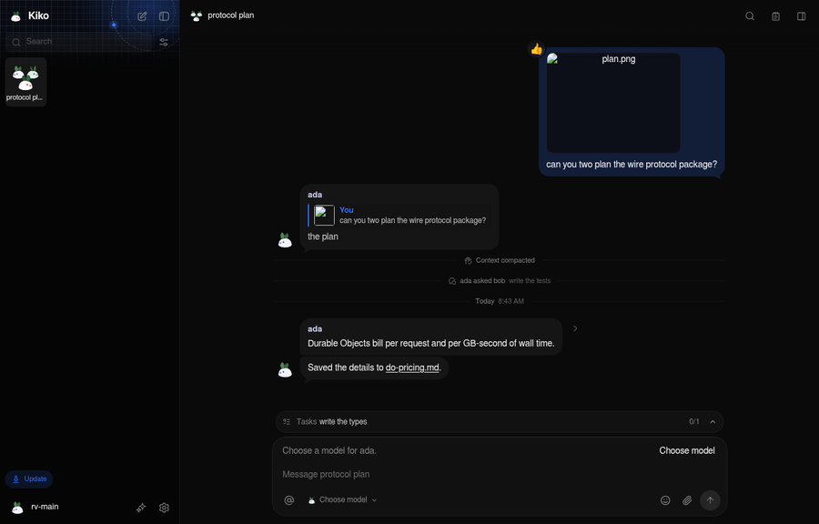
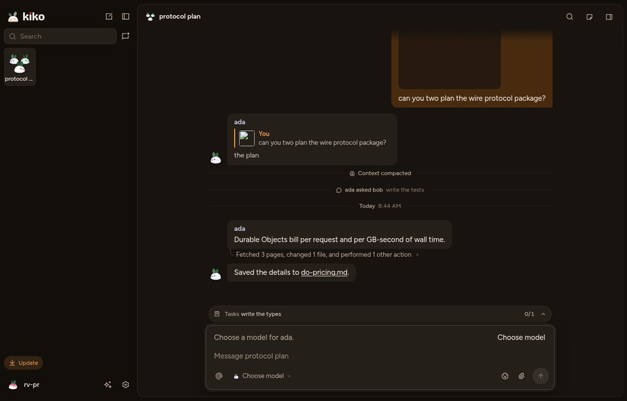
Main ships three different bunnies. The favicon has grey leaves, headphones and closed eyes on a blueprint grid. The onboarding mascot has headphones and open red eyes. The sidebar avatar has green leaves and speckles. The PR adds a fourth, on a glowing brown tile. The real fix is one flat yukiusagi everywhere, with no gradient, glow, grid, speckles or shadow.
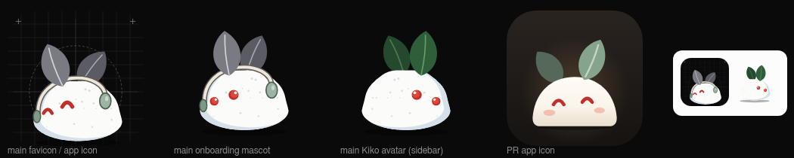
The app tile stays main's #0a0a0a. theme-color, the manifest and the boot screen stay on main's neutral palette.
The band is main's blueprint grid, dashed orbits and blue planet, drawn by .brand-art in sidebar.css. The PR deleted it. I'm putting it back unchanged, CSS copied from main below. The only change is the logo that sits on it.
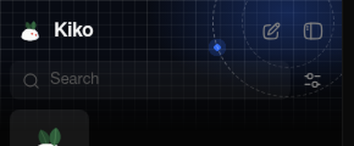
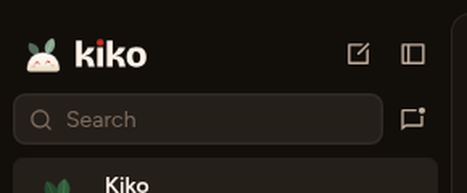
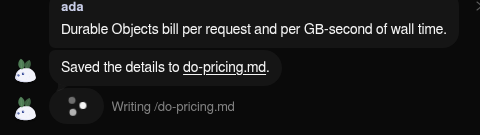
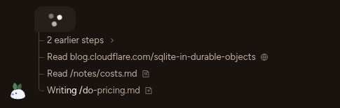
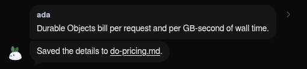
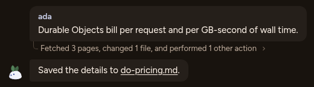
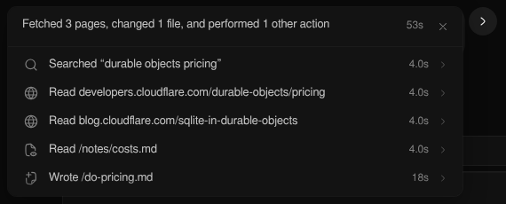
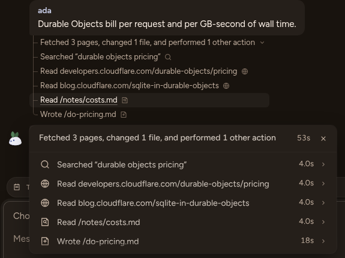
Compare the two chat screenshots at the top. Main has 14px text, 12px padding, a 16px radius, a pill for one line, a tail and 6px joints. The PR raises every text size by 1px, uses 14px padding and 12px card corners, and drops the tail and the pill. Keep main as it is.
| Where | PR adds | Do instead |
|---|---|---|
| Main column | Inset by 8px, with a 1px ring, a 12px radius and a shadow (top screenshot) | Flush, as main does. The sidebar tone does the separating. |
| Cards, rows, segments, popovers | 0 0 0 1px var(--border) inside the shared shadow tokens, so every card and menu gets a ring | Fill steps only. Popovers keep main's shadow. |
| Composer | An 18% edge plus a halo | Main's composer |
| Search, fields | An inset line (--line-w: 1.5px) | Fill (--control) |
| Reaction chips | A hairline plus a ring | Main's chip |
Main today is four screens: Welcome, Sign in, Provider, Model. The mascot sits in a blueprint orbit, and the provider list runs past the bottom of a 900px window. The PR is the same four screens, one card on a technical-drawing poster. Both ask too much before you can type. Every option below does it in two screens:
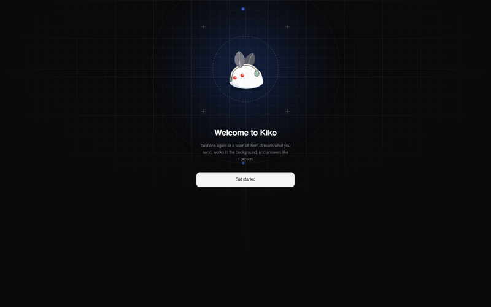
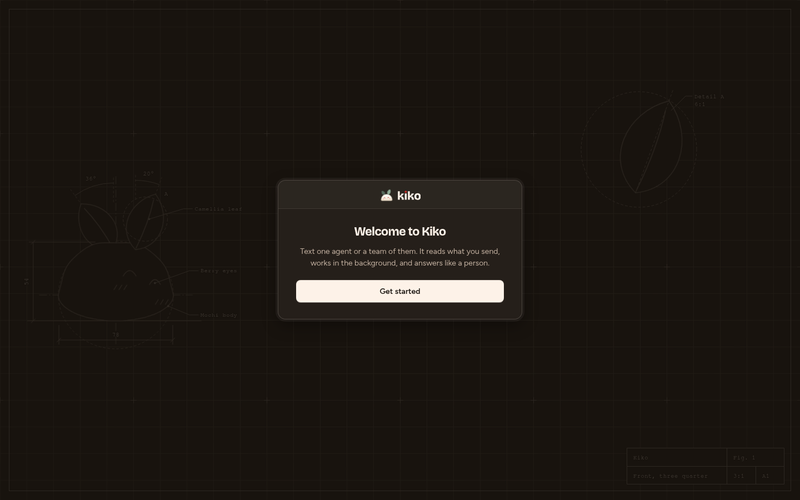
Behind a frosted blur you see your real Kiko: the sidebar with its band and "What's on your mind?". In front, one small sheet with the bunny peeking over its top edge. When you finish, the sheet shrinks into the composer, the blur lifts, and the cursor is already in the message box. There's no "you're done" page and no jump into a different-looking app.
No app behind. The page is main's black with slow, sparse snow falling (Kiko is a snow bunny) and the accent glowing faintly on the horizon. A big flat bunny sits in the middle with the same two steps under it, and two small dots show progress. The simplest option to build and the most atmospheric, but there's still a cut when you enter the app.
The classic desktop sign-in (Linear, Vercel). The left half is the brand: the bunny large on the snow night with one line about Kiko. The right half is the form: the same two steps, left-aligned. On a phone it collapses to Option B. It's clear and grown-up, and the most "website".
Main already generates the palette block in index.css from packages/theme/src/palette.ts (gen-palette.ts), and a test checks it. That part is sound. Three real problems remain:
index.css, and about 250 ad-hoc color-mix() calls in component CSS, so components invent their own shades.--accent is a grey hover fill, while the real accent is --ring.index.html hard-codes its own colours.The PR makes the first problem worse (274 properties, plus --surface, --frame-*, --composer-edge, --line-w, --press-edge, --reaction-bg). It also changes the default theme to warm and tints every neutral with the accent. Plan: rename by role, collapse the fills into a small scale, and move component color-mix calls onto roles. The default palette doesn't change.